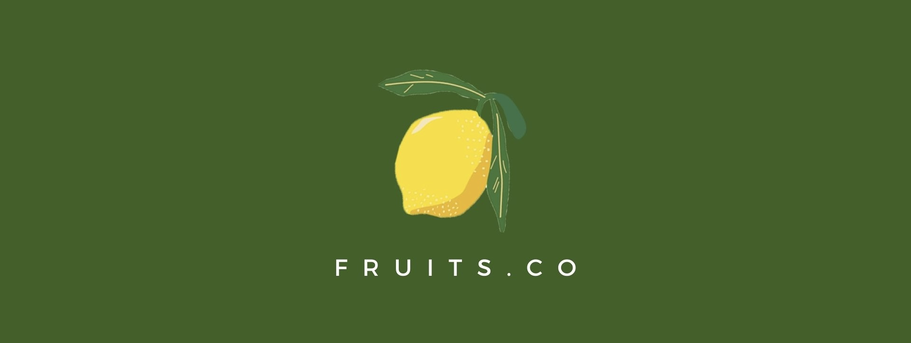
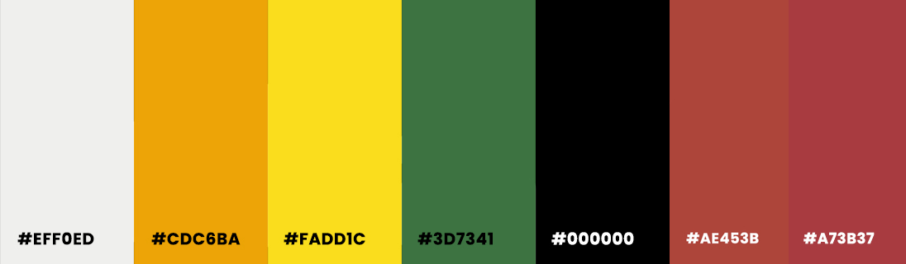
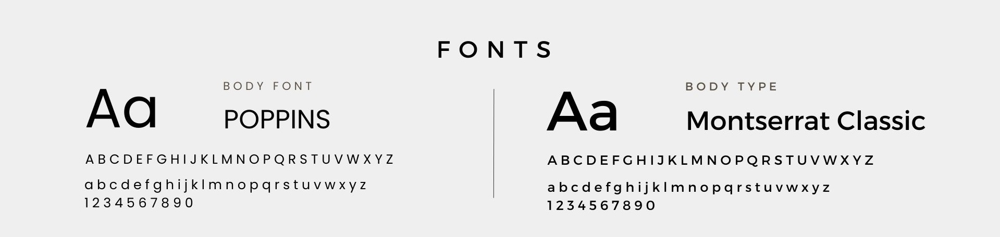
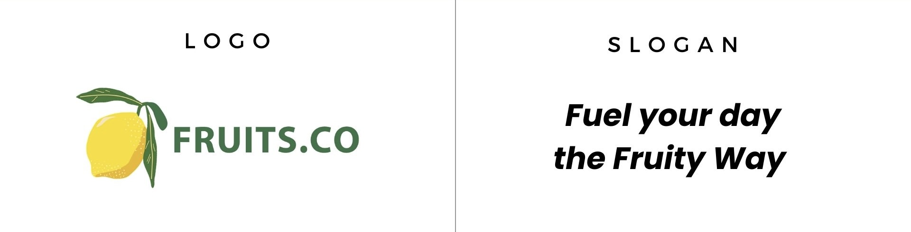
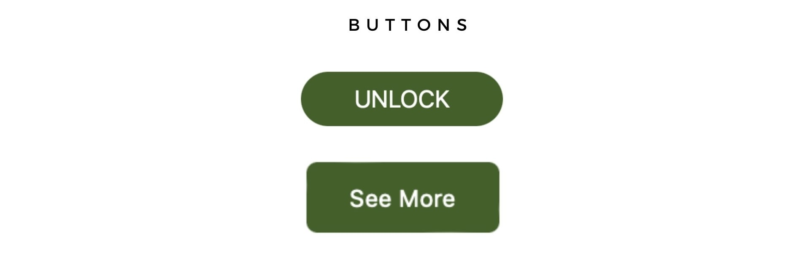
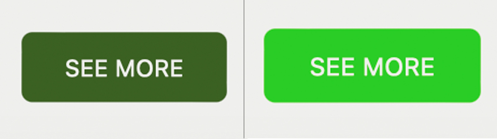

Design Process Part 1
Style Guide
Colour Palette
- #EFF0ED (Light Greyish White) – The original color which was #FFFFFF (pure white), was changed because the high contrast between black and white felt too harsh. I chose a softer, more neutral shade to create a gentler, more comfortable visual experience. This new color maintains readability while being easier on the eyes, enhancing the overall user experience by reducing visual strain. The colour is used for the background, as it is soft and neutral, creating a clean, minimalistic look, allowing the vibrant fruit images and colours of the fruit plans to stand out.
- #CDC6BA (Light Orange) – This colour was chosen to represent the ‘Citrus’ fruit plan because it resembles the natural colours of fruits like oranges and grapefruits. Light orange is also often associated with warmth, positivity, and vitality, which aligns with the benefits of citrus fruits as they are known for boosting energy and immune health. The warm orange tone creates a friendly and inviting feel, which encourages engagement and interest in the Citrus plan. It also helps maintain visual consistency, reinforcing the website's overall theme of health and freshness.
- #FADD1C (Vibrant Yellow) – yellow is commonly associated with citrus fruits and some tropical fruits which helps users visually connect the colour with the diet plans that feature these fruits. Yellow is also linked to feelings of happiness, optimism, and vitality which are qualities that resonate with a healthy lifestyle and align with the positive impact these diet plans aim to provide.
- #3D7341 (Green) – Green is commonly associated with nature and health wellness, making it appropriate for a brand centered on fruit diet plans. The colour is also popular for symbolizing freshness, growth, and sustainability, which aligns with the website’s aim of promoting a natural, healthy lifestyle. By using this colour the website conveys a health-conscious image, appealing to customers who prioritize wellness and health. Additionally, green is known to evoke feelings of trust and stability, which can help reassure users that the diet plans are reliable and beneficial for their health.
- #000000 (Black) – I chose black for the text as it provides effective readability. Black provides a strong contrast against lighter backgrounds, which is essential for visual clarity. This contrast enhances legibility, making it easier for users to read and comprehend the information presented
- #AE453B (Light Red) – This colour effectively represents the berry fruit plan, as it closely resembles the vibrant hues of strawberries and raspberries, reinforcing the fruit-centred theme of the website. It not only evokes feelings of freshness and health, enticing visitors to explore the plan, but also creates a cohesive visual identity throughout the site by ensuring that all fruit plans are distinctly represented.
- #A73B3F (Maroon) – Its darker shade creates a strong contrast against lighter elements of the palette, improving readability and guiding users' attention to important information. By using Maroon, the theme of health and vitality is reinforced, enticing visitors to consider the diverse benefits of the fruit plans.
Wireframes
Fonts
1. Poppins is a sans-serif typeface that is known for its clean lines and modern look. It includes various weights which allow for a clear hierarchy, making it ideal for headings in bold and normal text for paragraphs. This versatility ensures that users can easily navigate through the content, enhancing their overall experience. It also has rounded edges which gives it a friendly and approachable feel, aligning well with the inviting nature of the fruit-themed website. This tone encourages visitors to engage with the content and feel comfortable exploring the fruit plan subscriptions. Additionally, it also has a has a contemporary design that resonates with a health-conscious audience, reinforcing the idea of fresh and trendy diet options.
2. Montserrat is also a sans-serif style, and it offers a nice contrast to Poppins. It’s been used for the footer which distinguishes the footer as different while maintaining visual harmony throughout the site. This differentiation helps users easily identify the footer as a separate informational section. Montserrat is designed for readability and works well in smaller sizes, making it a good choice for the footer text where information like contact details and copyright notices are. Its professional appearance also aids the credibility to the brand.
Branding
The website is centered around fruits, making them the primary focus and goal. I decided to name the commercial website “Fruits.Co", short for "Fruits Company," to emphasize its identity as a dedicated fruit business. The logo is a lemon icon that reinforces the fruit theme, creating a strong, memorable brand identity. To maintain this consistency, the website features multiple fruit images, visually aligning with its purpose and enhancing the theme’s cohesiveness.
Adding to the brand identity, the slogan "Fuel your day the fruity way" highlights the company’s mission to promote a fruit-filled lifestyle. The color palette, inspired by a variety of fruits such as berries, tropical fruits, and citrus, complements this theme, creating an inviting, fresh aesthetic.
To build credibility, custom logos I created on Canva represent partner companies supporting the business, creating a sense of credibility. Additionally, a testimonial from the CEO is included, further establishing trustworthiness and offering a personal touch to the business.
To enhance the business's credibility, I’ve included logos of trusted payment options Apple Pay, VISA, and PayPal on the checkout page. This reassures users of the secure and reliable payment methods available, creating confidence in the transaction process.
Interactive Elements
 To enhance interactivity, the buttons feature a hover effect that changes their color, providing immediate visual feedback and indicating they’re clickable. I chose rounded-edge buttons to create a softer, more approachable look, making the design feel modern and friendly. This rounded style reduces visual harshness and encourages user engagement. For certain actions, like 'Subscribe,' I opted for slightly less rounded buttons to balance approachability with a professional, structured appearance. This design conveys both friendliness and precision, which is especially valuable for actions involving transactions, where it’s important to establish a sense of both warmth and reliability.